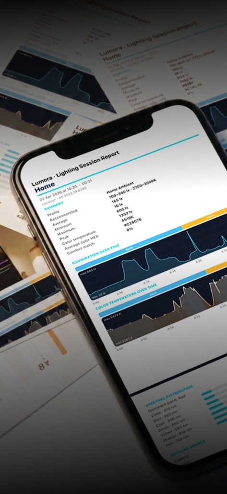
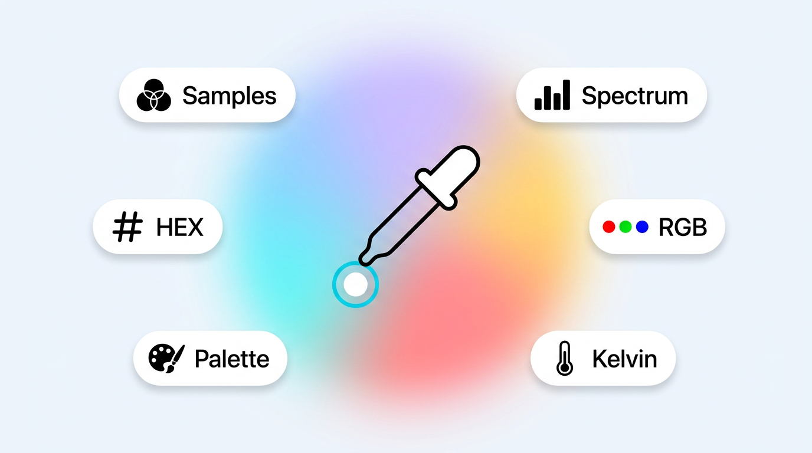
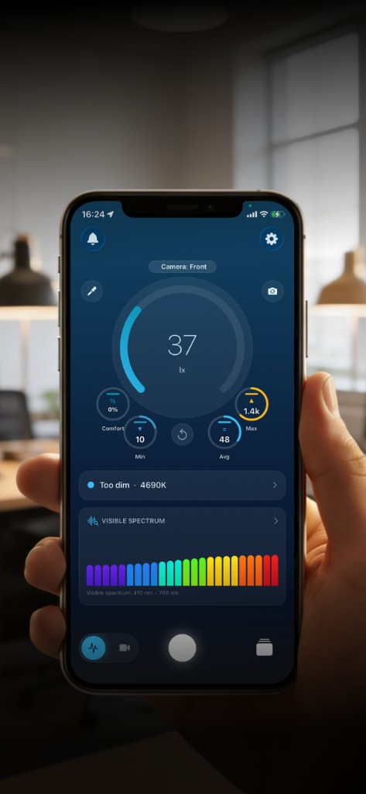
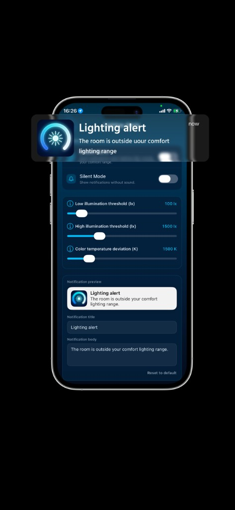
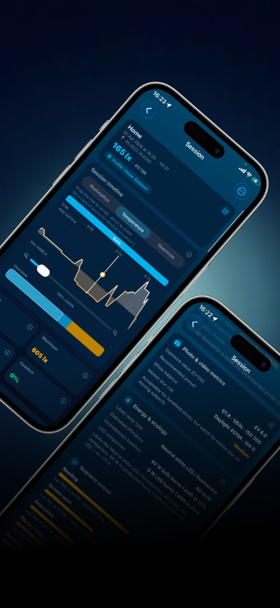

A precision light meter for iPhone. Measure illumination, color temperature, and the visible-light spectrum in real time — and finally understand what the light around you really means.

Lumora turns your iPhone into a precision light meter. See the current lux level the moment light changes, alongside Min, Avg, Max, and a live color-temperature reading on a single, calm screen.

Point at any object and read its true color in RGB, HEX, and HSL — instantly. Need more? Open the visible-light spectrum to see how warm tungsten, cool daylight, and modern LED sources actually shape your space.

Record any environment and review it later. Lumora logs illumination, color temperature, and spectrum across the entire session — with location, capture source, and time-based statistics. Perfect for comparing rooms, venues, and shoots.

Choose a profile — work, study, photography, plants, sleep — and Lumora monitors illumination and color temperature against the recommended ranges for that scenario. Get a gentle alert the moment conditions drift outside your comfort zone.

Export every session as a detailed PDF report — illumination over time, color temperature curve, spectral distribution, location data, blue-light exposure, capture source breakdown, and automatic recommendations. Ready to share with clients, designers, or growers.
About
We work under harsh office fluorescents, read in dim corners, and stare at glowing screens late at night — rarely thinking about how lighting actually affects us. Wrong illumination strains your eyes, kills concentration, throws off your sleep, and silently shapes how your plants, photos, and rooms look.
Lumora helps you understand the lighting around you — so you can make better decisions about where you live, work, study, and shoot.
Full-featured optical measurement tool
Always-updating, always-accurate illumination reading. Open the app and see how bright your surroundings really are — no settings, no complex parameters.
Warm tungsten, neutral daylight, or cool office light — at a glance. Identify mixed sources and see exactly how your space is being lit.
Real-time visible-light spectrum breakdown. Don’t just learn how bright it is — understand what kind of light is filling the room, including the high blue-light share of modern monitors.
Capture color samples from the camera feed and store them for later. RGB, HEX, HSL — clean, accurate, organized.
Record any environment and review it later — with location, capture source, time-based statistics, and a complete lighting timeline you can scroll through and zoom into.
Record video with live lux and color-temperature overlays burned into the file — perfect for documenting shoots, walkthroughs, or lighting audits.
Switch between front, wide, and telephoto cameras during a session. Lumora logs which capture source was active at each moment as a clean interactive timeline.
Manual offset correction for the illumination sensor. When measurement accuracy matters, you have full control.
Pick a scenario — work, study, photography, plants, sleep — and Lumora alerts you when illumination or color temperature drift outside the recommended comfort zone.
Every session can be exported as a detailed PDF — measured parameters, location, time-based breakdowns, blue-light exposure, and automated recommendations.
Lumora analyzes the camera feed during each session — detecting overexposure, underexposure, and unstable lighting — so you know which readings are most reliable.
Lumora is free to start — live lux, Kelvin, color sampling, basic stats, history with geodata. Pro unlocks the spectrum analyzer, full sessions, video overlays, PDF reports and more.
Lumora is not a medical application and does not provide medical diagnoses or health advice. It is an optical measurement tool for environmental lighting awareness. For any health concerns related to light exposure, please consult a qualified professional.